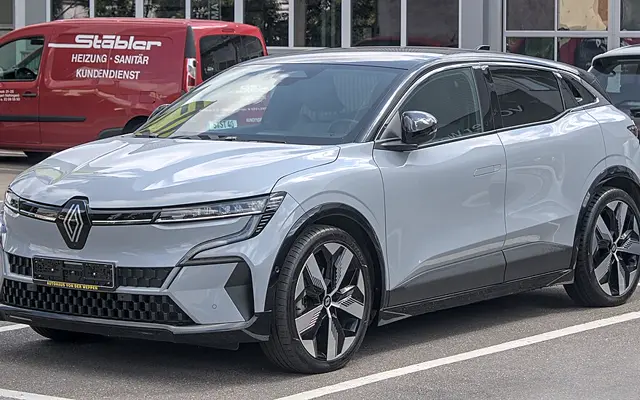

Par Motor › Precios por modelo › Renault Mégane E-Tech
Precio de segunda mano · noviembre de 2026¿Cuánto vale un Renault Mégane E-Tech de segunda mano?

Precio justo estimado de un Renault Mégane E-Tech usado en España, año por año, con los kilómetros normales para su edad y en buen estado: de 20.000 € a 36.100 €. Para tasar el tuyo con sus kilómetros reales y su estado, usa el tasador gratis.
Precios del Renault Mégane E-Tech por año
Mégane E-Tech (2022–hoy)
Precio de nuevo: EV40 130 CV, 36.000 € · EV60 220 CV, 42.000 €
| Año | Km normales | EV40 130 CV · Eléctrico | EV60 220 CV · Eléctrico |
|---|---|---|---|
| 2026 | 5.000 km | 30.900 € | 36.100 € |
| 2025 | 20.000 km | 25.800 € | 30.100 € |
| 2024 | 35.000 km | 23.700 € | 27.600 € |
| 2023 | 50.000 km | 21.800 € | 25.400 € |
| 2022 | 65.000 km | 20.000 € | 23.400 € |
Kilómetros normales: 15.000 al año en gasolina, híbridos y eléctricos, y 20.000 en diésel, con un máximo de 100.000 km (por encima no tasamos: el precio depende demasiado del historial de cada coche). Cifras redondeadas a 100 €.
Preguntas frecuentes
¿Cuánto vale un Renault Mégane E-Tech de segunda mano?
Según el año, la versión y los kilómetros, un Renault Mégane E-Tech usado vale hoy de 20.000 € a 36.100 € en España. El más barato de nuestra tabla es un EV40 de 2022 (20.000 €) y el más caro un EV60 de 2026 (36.100 €). Son precios justos estimados entre particulares y profesionales, con los kilómetros normales para su edad y en buen estado.
¿Cuánto valor pierde un Renault Mégane E-Tech al año?
Con unos años encima, un Renault Mégane E-Tech pierde alrededor de un 8 % de su valor cada año (calculado sobre el EV40 de la generación Mégane E-Tech). Los primeros años la caída es mayor y a partir de los 70.000 km se acelera.
¿Qué motorizaciones tiene el Renault Mégane E-Tech?
En nuestra base de datos hay versiones eléctrico, en 1 generación: Mégane E-Tech.
¿Cómo sé si me piden demasiado por un Renault Mégane E-Tech?
Abre el tasador de Par Motor, elige el Renault Mégane E-Tech, el año y los kilómetros reales, y escribe lo que te piden. Te diremos si está por debajo del precio justo (chollo) o por encima (caro). Es gratis y no pide registro ni matrícula.
Otros Renault
- Arkana
- Austral
- Captur
- Clio
- Espace
- Fluence
- Kadjar
- Kangoo
- Koleos
- Laguna
- Mégane
- Rafale
- Renault 4
- Renault 5
- Scénic
- Symbioz
- Talisman
- Twingo
- Zoe
Compara su coste real
El precio de compra es solo una parte. Mira cuánto te costaría al mes con combustible, seguro, neumáticos, mantenimiento y lo que pierde de valor.
Abrir el comparador →